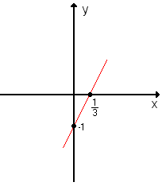

FUNÇÃO
O que e ?
Uma função é uma regra que relaciona cada elemento de um conjunto a um único elemento de outro. O primeiro conjunto é chamado de domínio, e o segundo, contradomínio da função. A função determina uma relação entre os elementos de dois conjuntos. Podemos defini-la utilizando uma lei de formação, em que, para cada valor de x, temos um valor de f(x). Chamamos x de domínio e f(x) ou y de imagem da função. A formalização matemática para a definição de função é dada por: Seja X um conjunto com elementos de x e Y um conjunto dos elementos de y, temos que: f: x → y

Tipos de Função
- Função Polinomial ou Função do Primeiro
VrauGrau üëç(NOSSO FOCO); - Fun√ß√£o crescenteAqui temos algumas fun√ßoes ;
- Função Quadratica Se você quiser saber mais sobre funçao do Quadratica entre aqui;
Função do primeiro Grau
Definição
Essa função tem o nome de polinomial do 1º Vrau grau, ou afim, qualquer função f de IR em IR dada por uma lei de forma f(x)=ax+b, onde a e b sao reais dados e a diferente de 0.
Na função f(x)=ax+b, o termo a é chamado de coeficiente de x e o número b e chamado termi constante.
Agora vamos ver uns exepmlos da função polinomial:
f = 5x-3 onde a = 5 e b = -3;
f = -2x-7 onde a = -2 e b = -7;
f = 5x onde a = 5 e b = 0;
Observação
Não decore as posição dos termo com a e b porque eles podem aparecer de forma diferentes.
Grafico
O Grafico de uma funça do 1º grau ,com adiferente de 0, é uma reta oblíqua (que nao intercepta uma outra reta) ais eixos Ox e Oy.
como o grafico na função polinomia e uma reta e sabemos que para determinar uma reta precisamos de dois pontos no nosso caso X e Y
Aqui no nosso exemplo usaremos a função y = 3X-1(Y e a mesma coisa de f(X))
Entao ficamos assim :
Entao para o nosso primeiro ponto o X(que nesse exemplo vai ser 0) e vamos achar o valor de Y, nessa situação vamos colocar que no X= 0, entao vamos pegar a funçao Y=3X-1, no logar do X colocamos o 0 e dps mutiplicamos.
Para resolver essa parte e igual equação do primeiro grau .Se vc nao sabe resolver equaçãoes entre aqui
Y=3X-1
Y=3*0-1
Y=0-1
Y=-1
Entao descobrimos o nosso Y, que sera o valor que a reta vai passar no eixo Y
Agora vamos descobri onde a reta vai passar no eixo X, para isso vamos usar o Y=0 entao fica assim
Para resolver isso e a mesma coisa da primeira parte
Y=3X-1
0=3x-1
x=1/3
Entao descobrimos onde a reta vai passar no eixo X
| X | Y |
| 0 | -1 |
| 1/3 | 0 |